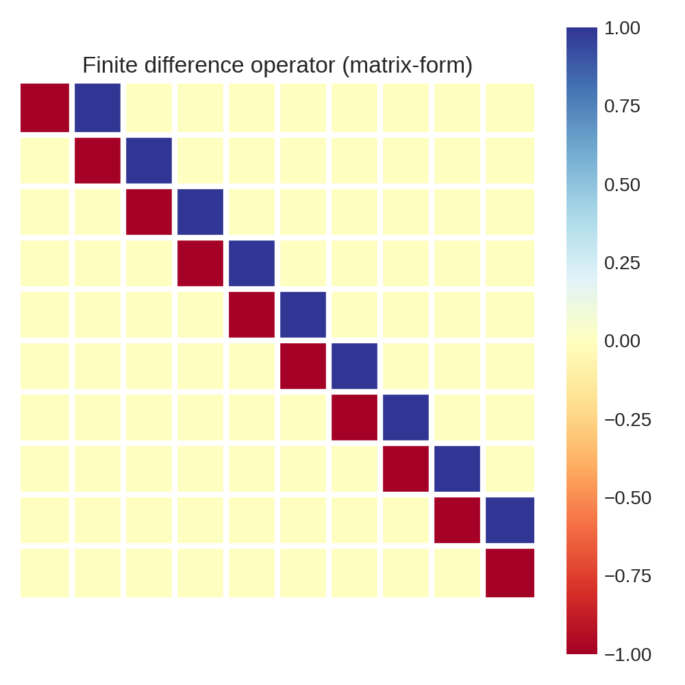

Differential operators in Pyxu#
The pyxu.operator.linop.diff module defines a set of classes and functions related to derivative operators.
In the context of inverse problems, derivative operators come handy when the spatial structure of the object or image be reconstructed can be leveraged. For example, common uses of derivatives are when the image is expected to be smooth in one or more directions, or in contrast, when it is expected to have sharp edges and flat regions. In those cases, the derivative operators are used as part of regularization terms, adding prior knowledge to our solution (see example TODO).
1. Partial derivatives#
The most basic differential operator is the partial derivative:
\begin{align} \frac{\partial^{n}}{\partial x_0^{n_0} \cdots \partial x_{D-1}^{n_{D-1}}} \end{align}
Which when applied to an given signal \(\mathbf{f}\), yields:
\begin{align} \frac{\partial^{n}}{\partial x_0^{n_0} \cdots \partial x_{D-1}^{n_{D-1}}}\mathbf{f} =\mathbf{D}\mathbf{f}\in \mathbb{R}^{N_0 \times \cdots \times N_{D-1}} \end{align}
Partial derivatives in Pyxu are computed via efficient matrix-free implementation, which is based on JIT compiled stencils. For illustrative purposes, consider the following approximation to the partial derivatives:
\begin{align} \mathbf{D} f [n] = f[n+1] - f[n] \end{align}
As we will see below, this is the forward finite difference approximation. This could be implemented in matrix-form, in which case it would look like this:

Or, it could be instead implemented via a for loop, in which the case of large input signals, would not require storing a large matrix:
Despite Python being very slow when it comes to for loops, there are some ways to make them really efficient (see HPC example).
1.1. Parameters#
The PartialDerivative class implements two main approximations to the partial derivatives as methods:finite_difference and gaussian_derivative:
def finite_difference(
arg_shape: pyct.NDArrayShape,
order: cabc.Sequence[pyct.Integer, ...],
scheme: typ.Union[str, cabc.Sequence[str, ...]] = "forward",
accuracy: typ.Union[pyct.Integer, cabc.Sequence[pyct.Integer, ...]] = 1,
mode: ModeSpec = "constant",
gpu: bool = False,
dtype: typ.Optional[pyct.DType] = None,
sampling: typ.Union[pyct.Real, cabc.Sequence[pyct.Real, ...]] = 1,
) -> pyct.OpT
def gaussian_derivative(
arg_shape: pyct.NDArrayShape,
order: cabc.Sequence[pyct.Integer, ...],
sigma: typ.Union[pyct.Real, cabc.Sequence[pyct.Real, ...]] = 1.0,
truncate: typ.Union[pyct.Real, cabc.Sequence[pyct.Real, ...]] = 3.0,
mode: ModeSpec = "constant",
gpu: bool = False,
dtype: typ.Optional[pyct.DType] = None,
sampling: typ.Union[pyct.Real, cabc.Sequence[pyct.Real, ...]] = 1,
) -> pyct.OpT
The common arguments are:
arg_shape: Shape of the input image. This is information is necessary in case batch processing is intended.order: Derivative order in each axis. For example, for a 2D image input:order=(1, 2)would yield:\[\frac{\partial^{3} \mathbf{f}}{\partial x \partial y^{2}}\]order=(2, 0)would yield:\[\frac{\partial^{2} \mathbf{f}}{\partial x^{2}}\]
mode: Padding mode to define boundary conditions. Pre-padding and post-trimming are computed to yield an output array of the same shape as the input. It can be defined in general (with astring) or per axis (with atuple). The available modes are:‘constant’
‘wrap’
‘reflect’
‘symmetric’
‘edge’
gpu: Whether the differential operator is meant for GPU or CPU computation.dtype: Desired precision of computation (single precision is faster than double)sampling: Spacing between pixels. It can be defined in general (with afloat/int) or per axis (with atuple)
The sections below it is explained the differences between these two methods and their specific arguments.
Important: Differential operators are not backend nor dtype agnostic! The arguments gpu and dtype must be chosen adequately.
1.2. Finite differences#
Finite differences approximate the derivatives by computing the difference between pixel values in the image. There are different variations of finite differences, such as forward differences, backward differences, and central differences.
Forward Differences: \(\mathbf{D}_{F} f [n] = \frac{f[n+1] - f[n]}{h}\)
Backward Differences: \(\mathbf{D}_{B} f [n] = \frac{f[n] - f[n-1]}{h}\)
Central Differences: \(\mathbf{D}_{C} f [n] = \frac{f[n+1] - f[n-1]}{2h}\)
Another important parameter for finite difference is the accuracy, which defines the number of digits used for the approximation.
These are some kernels generated by different parameterizations: the (parenthesis) indicates the central element.
Accuracy |
Forward |
Backward |
Central |
|---|---|---|---|
1 |
[-1, 1] |
[-1, 1] |
|
2 |
[-3/2, 2, -1/2] |
[1/2, -2, 3/2] |
[-1/2, 0, 1/2] |
4 |
[ -25/12 , 48/12, -36/12, 16/12, -3/12] |
[ 3/12 , -16/12, 36/12, -48/12, 25/12] |
[1/12, -2/3, 0, 2/3, -1/12] |
Where the coefficients in bold indicate the center of the kernel. You can explore different parametrizations with the finite difference coefficient calculator, or you can directly create different instantiations and check the coefficients with the PartialDerivative.visualize() method.
Finite differences are simple to compute and do not require any additional assumptions or pre-processing steps:
[1]:
import matplotlib.pyplot as plt
import numpy as np
rng = np.random.default_rng(0)
from pyxu.operator import PartialDerivative
[3]:
# 1) Define ground truth signal
N = 500 # number of points
x_ax = np.linspace(0, 2 * np.pi, N) # coordinates
dx = x_ax[1] - x_ax[0] # sampling or pixel size
arr = np.sin(x_ax) # ground truth signal
derivative = np.cos(x_ax) # ground truth derivative
# 2) Define noisy measurements
noise = rng.normal(scale=0.01, size=N)
arr_noisy = arr + noise
# 3) Instantiate partial derivative operator via finite differences
finite_difference = PartialDerivative.finite_difference(
arg_shape=(N,),
order=(1,),
scheme="forward",
accuracy=1,
sampling=dx, # we should include the pixel size for accurate approximation
)
# 4) Estimate derivative
derivative_fd = finite_difference(arr)
derivative_fd_noisy = finite_difference(arr_noisy)
# 5) Plot results
fig, axs = plt.subplots(1, 2, figsize=(10, 5))
axs[0].plot(x_ax, arr, label="Signal", c="k")
axs[0].plot(x_ax, arr_noisy, label="Noisy signal", zorder=0, c="C1")
axs[1].plot(x_ax, derivative, label="Derivative of non-noisy signal", c="k")
axs[1].plot(
x_ax, derivative_fd, ls="--", label="Finite difference (non-noisy signal)", c="C2"
)
axs[1].plot(
x_ax,
derivative_fd_noisy,
label="Finite difference (noisy signal)",
zorder=0,
c="C3",
)
for ax in axs.ravel():
ax.set_xlabel("Time [s]")
ax.set_ylabel("Amplitude")
ax.legend();
/home/joan/miniconda3/envs/pyxu/lib/python3.11/site-packages/numba/np/ufunc/parallel.py:371: NumbaWarning: The TBB threading layer requires TBB version 2021 update 6 or later i.e., TBB_INTERFACE_VERSION >= 12060. Found TBB_INTERFACE_VERSION = 12050. The TBB threading layer is disabled.
warnings.warn(problem)
These results indicate that finite differences work fine for non-noisy data, but they can be quite sensitive to noise in the image and may introduce inaccuracies, especially when the image has high-frequency content. For more detailed information on this topic, check this great post on Gaussian derivative.
1.3.Gaussian derivative#
The Gaussian derivative is an alternative method for estimating partial derivatives. It is derived by convolving a signal with a Gaussian kernel and then computing the derivatives of the resulting smoothed signal.
[4]:
gaussian_derivative = PartialDerivative.gaussian_derivative(
arg_shape=(N,), order=(1,), sigma=dx, truncate=1, sampling=(dx,)
)
gaussian_derivative.visualize()
[4]:
'[-21.766068359509617 (0.0) 21.766068359509617]'
The main idea behind Gaussian derivative is to smooth the image with a Gaussian filter, which effectively suppresses noise and reduces the impact of high-frequency variations. The derivative of the Gaussian filter is known analitically, thus the Gaussian derivative is not an approximation of the partial derivative, but the exact derivative of the smoothed signal. This fact leads a biased but more robust estimator compared to finite differences.
[5]:
derviative_gd = gaussian_derivative(arr_noisy)
derviative_fd = finite_difference(arr_noisy)
fig, axs = plt.subplots(1, 2, figsize=(10, 5))
axs[0].plot(x_ax, arr, label="Signal", c="k")
axs[0].plot(x_ax, arr_noisy, label="Noisy signal", zorder=0, c="C1")
axs[1].plot(x_ax, derivative, label="Derivative of non-noisy signal", c="k")
axs[1].plot(
x_ax,
derivative_fd_noisy,
label="Finite difference (noisy signal)",
zorder=0,
c="C3",
)
axs[1].plot(
x_ax, derviative_gd, label="Gaussian derivative (noisy signal)", c="C4", zorder=1
)
for ax in axs.ravel():
ax.set_xlabel("Time [s]")
ax.set_ylabel("Amplitude")
ax.legend();
[6]:
gaussian_derivative_accurate = PartialDerivative.gaussian_derivative(
arg_shape=(N,), order=(1,), sigma=dx, truncate=4, sampling=(dx,)
)
derviative_gd_accurate = gaussian_derivative_accurate(arr_noisy)
fig, axs = plt.subplots(1, 2, figsize=(10, 5))
axs[0].plot(x_ax, arr, label="Signal", c="k")
axs[0].plot(x_ax, arr_noisy, label="Noisy signal", zorder=0, c="C1")
axs[1].plot(x_ax, derivative, label="Derivative of non-noisy signal", c="k")
axs[1].plot(
x_ax, derviative_gd, label="Gaussian derivative (1x$\sigma$)", c="C4", zorder=0
)
axs[1].plot(
x_ax,
derviative_gd_accurate,
label="Gaussian derivative (4x$\sigma$)",
c="C6",
zorder=1,
)
for ax in axs.ravel():
ax.set_xlabel("Time [s]")
ax.set_ylabel("Amplitude")
ax.legend();
Gaussian derivatives can be computed for different orders of derivatives (e.g., first-order, second-order) and at different scales (by varying the standard deviation of the Gaussian kernel). Higher-order derivatives capture more detailed information about the image’s structure, while larger scales provide a more global representation.
1.4. How to choose?#
The choice between finite difference and Gaussian derivative can be seen as a trade-off between bias and variance: - When estimating partial derivatives, the Gaussian derivative robustly captures the true behavior of the derivative of the smoothed signal, thus introducing bias in the estimation. - On the other hand, finite differences, especially when using a small accuracy value, can be highly sensitive to noise and can produce unstable estimates of the derivative (variance). Gaussian derivatives, on the other hand, tend to be smoother and less affected by noise.
As a rule of thumb, it is recommended to try both approaches and to use the Gaussian derivative for very noisy signals.
2. Stacks of partial derivatives#
There are two main classes of stacks of partial derivative:
Gradient: stack of all first order derivatives (one per axis),
:nbsphinx-math:`begin{align} mathbf{f} = begin{bmatrix}
frac{partial mathbf{f}}{partial x_0} \ vdots \ frac{partial mathbf{f}}{partial x_{D-1}} end{bmatrix} in mathbb{R}^{D times N_{0} times cdots times N_{D-1}}
end{align}`
Hessian: stack of all second order derivatives,
- :nbsphinx-math:`begin{align}
- mathbf{H} mathbf{f} = begin{bmatrix}
dfrac{ partial^{2}mathbf{f} }{ partial x_{0}^{2} } & dfrac{ partial^{2}mathbf{f} }{ partial x_{0},partial x_{1} } & cdots & dfrac{ partial^{2}mathbf{f} }{ partial x_{0} , partial x_{D-1} } \ dfrac{ partial^{2}mathbf{f} }{ partial x_{1} , partial x_{0} } & dfrac{ partial^{2}mathbf{f} }{ partial x_{1}^{2} } & cdots & dfrac{ partial^{2}mathbf{f} }{partial x_{1} ,partial x_{D-1}} \ vdots & vdots & ddots & vdots \ dfrac{ partial^{2}mathbf{f} }{ partial x_{D-1} , partial x_{0} } & dfrac{ partial^{2}mathbf{f} }{ partial x_{D-1} , partial x_{1} } & cdots & dfrac{ partial^{2}mathbf{f} }{ partial x_{D-1}^{2}} end{bmatrix}
end{align}`
2.1. Parameters#
The Gradient and Hessian objects are parametrized as:
def Gradient(
arg_shape: pyct.NDArrayShape,
directions: typ.Optional[pyct.NDArrayAxis] = None,
diff_method: str = "fd",
mode: ModeSpec = "constant",
gpu: bool = False,
dtype: typ.Optional[pyct.DType] = None,
parallel: bool = False,
**diff_kwargs,
) -> pyct.OpT:
def Hessian(
arg_shape: pyct.NDArrayShape,
directions: typ.Union[
str,
cabc.Sequence[pyct.Integer, pyct.Integer],
cabc.Sequence[cabc.Sequence[pyct.Integer, pyct.Integer], ...],
] = "all",
diff_method: str = "fd",
mode: ModeSpec = "constant",
gpu: bool = False,
dtype: typ.Optional[pyct.DType] = None,
parallel: bool = False,
**diff_kwargs,
) -> pyct.OpT:
There are some common arguments that we didn’t see in the previous PartialDerivative class:
diff_method: This will select betweenfinite_difference(‘fd’) orgaussian_derivative(‘gd’) type of partial derivatives.parallel: IfTrue, it will compute the different partial derivatives in parrellalel on different threads.diff_kwargs: Placeholder to specify arguments that are specific tofinite_differenceandgaussian_derivative.
The sections below it is explained the differences between these two methods and their specific arguments.
Important: Be aware that the directions argument has different behavior between Gradient and Hessian. Keep reading for further details.
2.2. Gradient#
The gradient operator applies the first-order derivatives on all dimensions if the signal and concatenates them.
For example, in the case of a 2-dimensional image, the gradient operator implements:
:nbsphinx-math:`begin{align} boldsymbol{nabla} mathbf{f} = begin{bmatrix}
frac{partial mathbf{f}}{partial x} \ frac{partial mathbf{f}}{partial y} end{bmatrix} in mathbb{R}^{2 times N_{x} times N_{y}}
end{align}`
[8]:
from PIL import Image
from pyxu.operator import Gradient
toucan = np.array(Image.open("../_static/favicon.png").convert("L"))
toucan = toucan.astype(float)
toucan /= toucan.max()
grad = Gradient(
arg_shape=toucan.shape,
diff_type="gd",
sigma=6,
)
out = grad.unravel(grad(toucan.ravel()))
# Plot
fig = plt.figure(figsize=(8, 6), constrained_layout=True)
gs = fig.add_gridspec(4, 2)
axs = [
fig.add_subplot(gs[1:-1, 0]),
fig.add_subplot(gs[:2, 1]),
fig.add_subplot(gs[2:, 1]),
]
im = axs[0].imshow(toucan, cmap="gray_r")
axs[0].set_title(r"$\mathbf{f}$")
plt.colorbar(im, ax=axs[0])
im = axs[1].imshow(
out[1], cmap="seismic", vmin=-np.max(np.abs(out[1])), vmax=np.max(np.abs(out[1]))
)
axs[1].set_title(r"$\nabla_{x}\mathbf{f}$")
plt.colorbar(im, ax=axs[1])
im = axs[2].imshow(
out[0], cmap="seismic", vmin=-np.max(np.abs(out[0])), vmax=np.max(np.abs(out[0]))
)
axs[2].set_title(r"$\nabla_{y}\mathbf{f}$")
plt.colorbar(im, ax=axs[2])
for ax in axs:
ax.set_xticks([])
ax.set_yticks([])
ax.set_xlabel(r"$x$")
ax.set_ylabel(r"$y$")
┌───> Jacobian
┌───> Gradient (order=1) ──┴───> Divergence
PartialDerivative ──────┤
└───> Hessian (order=2) ──────> Laplacian
2.3. Hessian#
[9]:
from pyxu.operator import Hessian
hes = Hessian(
arg_shape=toucan.shape,
diff_type="gd",
sigma=6,
)
out = hes.unravel(hes(toucan.ravel()))
# Plot
fig = plt.figure(figsize=(12, 6), constrained_layout=True)
gs = fig.add_gridspec(4, 3)
axs = [
fig.add_subplot(gs[1:-1, 0]),
fig.add_subplot(gs[:2, 1]),
fig.add_subplot(gs[2:, 1]),
fig.add_subplot(gs[:2, 2]),
fig.add_subplot(gs[2:, 2]),
]
im = axs[0].imshow(toucan, cmap="gray_r")
axs[0].set_title(r"$\mathbf{f}$")
plt.colorbar(im, ax=axs[0])
im = axs[1].imshow(
out[2], cmap="seismic", vmin=-np.max(np.abs(out[2])), vmax=np.max(np.abs(out[2]))
)
axs[1].set_title(r"$\mathbf{H}_{xx}\mathbf{f}$")
plt.colorbar(im, ax=axs[1])
im = axs[2].imshow(
out[1], cmap="seismic", vmin=-np.max(np.abs(out[1])), vmax=np.max(np.abs(out[1]))
)
axs[2].set_title(r"$\mathbf{H}_{yx}\mathbf{f}$")
plt.colorbar(im, ax=axs[2])
im = axs[3].imshow(
out[0], cmap="seismic", vmin=-np.max(np.abs(out[0])), vmax=np.max(np.abs(out[0]))
)
axs[3].set_title(r"$\mathbf{H}_{xy}\mathbf{f}$")
plt.colorbar(im, ax=axs[3])
im = axs[4].imshow(
out[0], cmap="seismic", vmin=-np.max(np.abs(out[0])), vmax=np.max(np.abs(out[0]))
)
axs[4].set_title(r"$\mathbf{H}_{yy}\mathbf{f}$")
plt.colorbar(im, ax=axs[4])
for ax in axs:
ax.set_xticks([])
ax.set_yticks([])
ax.set_xlabel(r"$x$")
ax.set_ylabel(r"$y$")